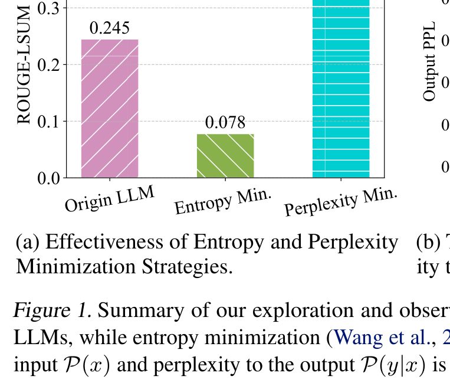
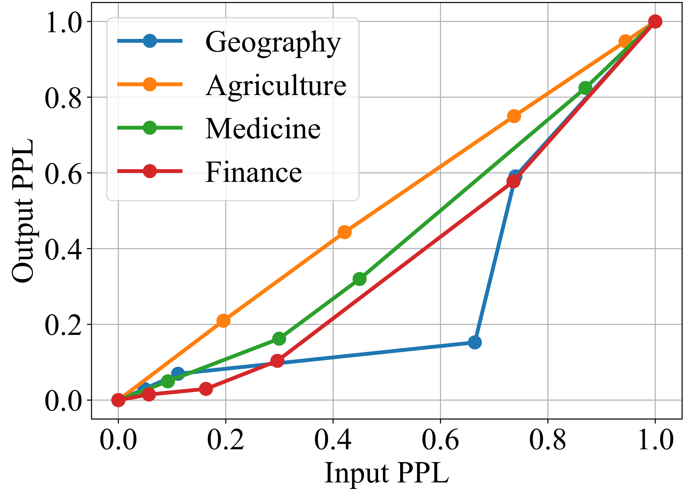
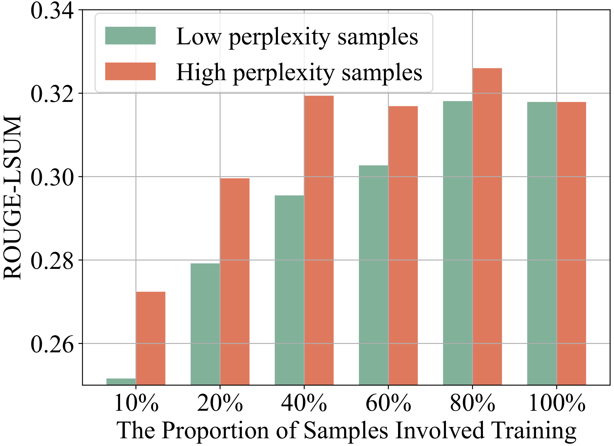
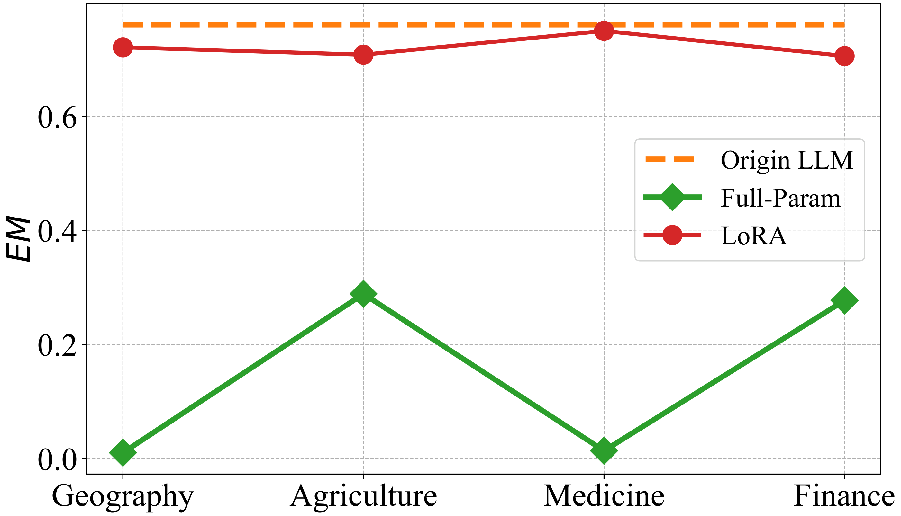

TLM：用最小化 input perplexity 让大模型在 test-time 自我适应
Test-Time Learning for Large Language Models
①开源贡献 Open-source Artifacts
这篇是 开源比较完整 的一篇：论文正文第 5.1 节明确给出代码地址，仓库自报已被 ICML 2025 接收，包含 offline / online 两套 TTL 实现、AdaptEval 评测脚本，并把 AdaptEval 数据集与 TLM 权重都托管到了 Hugging Face。以下链接均已逐一核实存在。
| 类型 | 是否开源 | 内容 / 链接 |
|---|---|---|
| 代码 Code | ✔ | github.com/Fhujinwu/TLM 基于 LLaMA-Factory 框架，含 offline_ttl.yaml / online_ttl.yaml 配置、src/ 核心实现与 evaluation/（ROUGE、BERTScore、BLEURT 等）。许可证 Apache-2.0。 |
| 数据集 / Benchmark （AdaptEval） | ✔ | huggingface.co/datasets/Jinwu01/AdaptEval 含 DomainBench / InstructionBench / ReasoningBench 共 10 个子集，每子集各随机抽 5k 样本。许可证标 MIT。（注：截至解读日 HF 在线 viewer 因 MetaMathQA 子集多一个 solution 列而报 cast 错误，但文件本身可下载。） |
| 模型权重 Weights | ✔ | huggingface.co/Jinwu01/TLM safetensors 格式，许可证 MIT；README 为空，未附详细说明卡。 |
| 项目主页 / Demo | ✘ | 未见独立 project page 或在线 demo。 |
说明：AdaptEval 本身是把 HF 上 10 个现成公开数据集（GeoSignal、Agriculture-QA、GenMedGPT-5k、Wealth-Alpaca-LoRA、Alpaca-GPT4、Dolly-15k、InstructionWild、GSM8K、MetaMathQA、LogiQA）各抽 5k 重新打包成统一的 TTL 评测套件，而非全新采集的语料。
②研究动机与贡献 Motivation & Contribution
背景与问题
LLM 靠海量预训练拿到了通用能力，但部署到真实环境时会撞上 distribution shift，主要有两类：1) Vertical Domain Shift——医学、法律、农业等垂域里的稀有术语和结构，模型没专门训过；2) 非特定领域的分布漂移——用户意图、方言、俚语等 linguistic diversity 让测试分布偏离训练分布。两者都会让生成质量显著下滑。
作者把已有的应对手段归成四类，并逐一指出痛点（原文 Table 1）：
- Fine-tuning：要大量有标注数据，垂域标注昂贵、在线更新场景更难拿到。
- RAG：不更新参数、靠外部检索，但效果强依赖检索质量，且引入额外延迟，不适合时间敏感任务。
- Test-Time Adaptation (TTA)：用无标注测试数据在线更新参数——方向对，但绝大多数 TTA 沿用entropy minimization，这忽视了 LLM 的 autoregressive 依赖结构，直接套用反而有害（见下文 Figure 1a，熵最小化把 ROUGE 从 0.245 砸到 0.078）。
- Test-Time Training (TTT)：推理时从训练集/知识库检索近邻再 fine-tune，但假设能访问训练数据或知识库，现实里常不成立，且检索本身有开销。
归纳起来三条核心 limitation：① 有标注数据难获取；② 现有方法忽视 autoregressive 依赖、误用 entropy minimization；③ 训练开销大且容易 catastrophic forgetting。
本文的切入点
作者定义了一个比 TTA / TTT 都更苛刻的设定 Test-Time Learning（TTL）：既没有源数据、也没有标注、也没有外部知识库，只有当前这批无标注测试输入 $x$，要求 self-supervised 地把模型适配到目标分布。关键观察（也是全文支柱）是：
测试时拿不到答案 $y$，但 input 的 perplexity $\mathcal{P}(x)$ 和 output 的 perplexity $\mathcal{P}(y\,|\,x)$ 趋势一致——所以最小化看得见的 $\mathcal{P}(x)$ 就能间接压低看不见的 $\mathcal{P}(y\,|\,x)$，从而提升答案质量。
核心贡献
- 提出 input perplexity minimization 作为 TTL 目标：给出经验证据（Figure 1b 四个垂域里 input/output perplexity 强正相关）和一阶 Taylor 展开的理论分析，论证最小化 $\mathcal{P}(x)$ 能降低 $\mathcal{P}(y\,|\,x)$，把 self-supervised 适配落地。
- Sample-Efficient Learning Strategy：发现 high-perplexity 样本对更新贡献更大、而 very-low-perplexity 样本甚至有害，于是用基于 perplexity 的权重函数主动筛选并加权 high-perplexity 样本做反向传播，省算力又提点。
- 用 LoRA 而非全参更新来抑制 catastrophic forgetting（Observation 3 / Figure 2：全参更新在 GSM8K 等通用能力上崩盘，LoRA 几乎不掉）。
- 构建 AdaptEval benchmark（DomainBench / InstructionBench / ReasoningBench，共 10 子集），并在 4 个 LLM 上验证 TLM 相比原始模型在 domain 知识适配上 ≥20% 提升。
③方法 Method
TLM 的 pipeline（原文 Algorithm 1）很轻：给训练好的 LLM 挂上 LoRA，逐 batch 处理测试样本——先正向算出预测与每个样本的 perplexity，据此算 selection score $S(x)$ 决定要不要 / 多大权重地更新，再用 input perplexity 损失反传，只更新 LoRA 参数。整体由三个组件构成：(1) input perplexity minimization 目标、(2) sample-efficient 的样本选择、(3) LoRA 轻量更新。下面逐一展开，并用三个 observation 把设计动机串起来。
3.1 为什么最小化 input perplexity 有效
Perplexity 定义为平均负对数似然的指数：对 token 序列 $\{x_1,\dots,x_T\}$，
$$\mathcal{P}(\{x_1,\dots,x_T\}) = \exp\!\Big(-\tfrac{1}{T}\textstyle\sum_{t=1}^{T}\log p(x_t\,|\,x_{1:t-1};\Theta)\Big).$$其中 $p(x_t\,|\,x_{1:t-1};\Theta)$ 是模型在参数 $\Theta$ 下、给定前文预测第 $t$ 个 token 的条件概率；$T$ 是序列长度。perplexity 越低代表模型对这段文本越「自信」、越贴合数据真实分布，也即拟合得越好。
理想情况下我们想直接压低答案的 perplexity $\mathcal{P}(y\,|\,x;\Theta)$，但测试时只有输入 $x$、没有答案 $y$。作者退而求其次去最小化 $\mathcal{P}(x;\Theta)$，并用一阶 Taylor 展开说明这步合理。记一次 TTL 更新后参数为 $\Theta' = \Theta - \eta\nabla_\Theta(-\log\mathcal{P}(x;\Theta))$，则：
$$\log \mathcal{P}_{\Theta'}(y\,|\,x) \approx \log \mathcal{P}_{\Theta}(y\,|\,x) + \eta\underbrace{[\nabla_\Theta\log\mathcal{P}(x;\Theta)]^{\top}\nabla_\Theta\log\mathcal{P}_{\Theta}(y\,|\,x)}_{\text{cross-gradient 项}} + O(\eta^2).$$符号含义：$\eta$ 是学习率；第一项是更新前的答案对数似然；关键是cross-gradient 项，即「压低 input perplexity 的梯度方向」与「提升答案似然的梯度方向」的内积 $\langle\nabla_x,\nabla_y\rangle$。只要这个内积 $\geq 0$（即对语义对齐的 QA 对，两个梯度方向不冲突），那么对足够小的 $\eta$ 就能保证 $\log\mathcal{P}_{\Theta'}(y\,|\,x)\geq\log\mathcal{P}_{\Theta}(y\,|\,x)$——答案似然不降反升。作者在 DomainBench / LLaMA3.1-8B 上用 400 个 batch 实测，98.75% 的 batch 满足非负条件，平均内积 $\langle\nabla_x,\nabla_y\rangle = +5.60$，为这个假设提供了经验支撑。


3.2 Sample-Efficient Learning Strategy
Observation 2：不是所有测试样本对更新一样有用。把样本按 perplexity 排序后分批训练，发现 high-perplexity 样本贡献更大，而 very-low-perplexity 样本甚至拖累性能——因为低 perplexity 样本本就被模型建模得很好，没新信息，硬学反而 overfit。
于是优化目标加上一个逐样本权重 $S(x)$：
$$\min_{\Theta}\; S(x)\,\mathcal{P}(x;\Theta),\qquad S(x) = \lambda\cdot e^{\,[\log\mathcal{P}(x;\Theta)-\log P_0]}\cdot \mathbb{I}_{\{\mathcal{P}(x;\Theta)>P_0\}}(x).$$其中 $\mathbb{I}_{\{\cdot\}}$ 是指示函数，$P_0$ 是 perplexity 阈值，$\lambda$ 是缩放系数。直觉：perplexity 低于 $P_0$ 的样本直接被门控掉（$S(x)=0$，省去反向传播），高于阈值的样本按超出量做指数加权，越「难」权重越大。注意 $S(x)$ 只需正向算 perplexity、不涉及反向传播，所以筛选本身几乎免费。论文取 $\lambda=0.10$、$P_0=e^3$。

3.3 用 LoRA 抑制 catastrophic forgetting
Observation 3：在 DomainBench 上分别用全参更新和 LoRA 做 TTL，再回头测 GSM8K / DomainBench EM。全参更新会把模型原本学到的通用知识冲掉（forgetting 严重），而 LoRA 因为只动很小一部分参数，相当于自带正则，几乎不掉点。于是 TTL 的更新只作用在 LoRA 增量上：
$$\min_{\Delta\Theta}\; S(x)\,\mathcal{P}(x;\,\Theta+\Delta\Theta),\qquad \Delta\Theta = BA,$$其中 $\Delta\Theta=BA$ 是低秩增量，$A$ 用随机高斯初始化、$B$ 初始化为零（故训练开始时 $\Delta\Theta=0$，不扰动原模型），TTL 期间只更新 $\Delta\Theta$、冻结原始权重 $\Theta$。这既轻量又保留了原始知识。

5e-5 / 5e-5 / 1e-6；样本选择 $\lambda=0.10$、$P_0=e^3$（消融显示 $e^3$ 在多数垂域最优，过高过低都掉点）。所有实验用 greedy decoding（temperature=0）稳定输出。online 设定下每 100 个样本才更新一次参数。还验证了在 4-bit NF4 量化（QLoRA 风格）模型上同样有效。
④实验评估 Evaluation
评测设置
- Benchmark（AdaptEval，10 子集 ×5k）： DomainBench（Geography / Agriculture / Medicine / Finance，考察垂域知识适配）、 InstructionBench（Alpaca-GPT4 / Dolly / InstructionWild，考察指令跟随）、 ReasoningBench（GSM8K / MetaMath / LogiQA，考察数学与逻辑推理）。
- LLM：Llama3.2-3B-Instruct、Llama3-8B-Instruct、Llama2-13B-chat、Qwen2.5-7B-Instruct（覆盖不同规模与系列）。
- 对比基线：原始 LLM，以及三种 SOTA TTA 方法 Tent、EATA、COME（均为无标注在线更新；为公平对比都改成了 offline 设定）。
- 指标：DomainBench / InstructionBench 用 ROUGE-LSUM，ReasoningBench 用 Exact Match (EM)，均越高越好。
主要结果
核心结论：TLM 在全部数据集、全部模型上都稳定优于原始 LLM；而 Tent / EATA / COME 这些基于 entropy 的 TTA 方法在 LLM 上经常大幅倒退（很多格子掉到接近 0）。下表摘自原文 Table 2/3，挑 Llama3-8B-Instruct 为例（TLM 加粗）：
| 方法 (Llama3-8B-Instruct) | Geography | Medicine | Finance | GSM8K | Alpaca-GPT4 |
|---|---|---|---|---|---|
| Origin LLM | 0.2450 | 0.1265 | 0.2329 | 0.7610 | 0.3752 |
| Tent | 0.0778 | 0.0105 | 0.0372 | 0.7578 | 0.2001 |
| EATA | 0.2081 | 0.0127 | 0.1257 | 0.0250 | 0.1397 |
| COME | 0.0048 | 0.0301 | 0.0328 | 0.7479 | 0.1424 |
| TLM (Ours) | 0.3212 | 0.2372 | 0.3242 | 0.8074 | 0.4274 |
诚实解读：
- 垂域提升最显著：DomainBench 上相比原始模型「至少 20%」的提点站得住，部分格子（如 Medicine：0.1265→0.2372，约 +87%）提升巨大。摘要里的「≥20%」主要指 domain 知识适配。
- 基线方法集体翻车：Tent/EATA/COME 在多数垂域和 InstructionBench 上掉得很惨，印证了「entropy minimization 不适合 autoregressive 的 LLM」这一核心论点——TLM 的优势很大一部分来自换掉了优化目标。
- 推理任务提升较温和：ReasoningBench 上 GSM8K 仅约 +6.1%（0.7610→0.8074），EM 这类硬指标天花板更紧；在 Llama2-13B-chat 上 GSM8K/MetaMath 几乎持平（0.3458→0.3508、0.2498→0.2576），说明 TTL 对已经较弱或较饱和的能力增益有限，主要发力点仍是 domain/instruction 适配。
消融 / 分析
- input perplexity minimization 是主力（Table 4）：仅加 input perplexity 最小化（w/o SEL）相比原始 Llama3-8B 就有 >30% 相对提升，Medicine 上达 +83.9%——这一步贡献了绝大部分增益。
- Sample-Efficient 策略锦上添花：在 w/o SEL 基础上再加样本选择，性能再涨约 +2%（Agriculture +5.1%），同时反向传播次数减少约 4.6%（5000→4772）——既提点又省算力。
- 阈值 $P_0$ 敏感性（Figure 3）：$P_0=e^3$ 在 Geography/Medicine/Finance 最优、Agriculture 近最优；过高会筛掉太多 high-perplexity 样本、过低会混入无用的 low-perplexity 样本。
- online 设定（Table 5）：每 100 样本更新一次，TLM 仍稳超原模型，且因「样本越学越简单被门控掉」，反向传播次数狂降 69.7%（5000→1514）。
- 量化兼容：4-bit NF4 量化的 Llama3-8B 上，TLM 在 DomainBench 四子集仍 ≥25% 提升，说明该方案对量化部署友好。
⑤洞见 Insights
- 把 CV 里的 TTA 直接搬到 LLM 是错的。视觉 TTA 的看家本领 entropy minimization，在 autoregressive 的 LLM 上会主动破坏生成质量（0.245→0.078）。换成 perplexity minimization——一个天然贴合 next-token prediction 的目标——才对路。优化目标必须匹配模型的归纳结构。
- 用可观测的代理量优化不可观测的目标。测试时拿不到答案 $y$，但 input 和 output 的 perplexity 同涨同跌，于是「压 $\mathcal{P}(x)$」成了「压 $\mathcal{P}(y\,|\,x)$」的免费代理。这种「找一个梯度方向不冲突的可观测代理」的思路可迁移到很多 self-supervised 适配场景。
- 难样本更值钱，且 LoRA 是天然的抗遗忘正则。high-perplexity 样本信息量大、low-perplexity 样本反而有害；用 LoRA 的低秩约束做更新，几乎白送一层 forgetting 防护——这两点对任何在线/持续学习系统都有借鉴价值。
局限与未来
方法的边界比较清楚：(1) 增益高度集中在 domain/instruction 适配，对 reasoning 这类硬能力提升有限甚至持平（Llama2-13B 上 GSM8K 几乎不动）；(2) cross-gradient 非负只是经验上 98.75% 成立的假设，并非保证，对语义不对齐的 QA 对理论上可能失效；(3) batch size=1、逐样本更新，吞吐受限；(4) AdaptEval 是把现成公开数据各抽 5k 重组，shift 的「真实性/严苛度」取决于这些源数据。作者自列的未来方向是 Cross-Domain Continuous Adaptation——跨多领域连续适配而不过拟合到单一领域。
与相关工作的关系
论文用 Table 1 把自己定位在四类方法之外的新格子：相比 Fine-tuning 不需要标注；相比 RAG 不依赖外部知识库与检索；相比 TTA 改用 perplexity（而非 entropy）目标并显式处理 autoregressive 依赖；相比 TTT 不假设可访问训练数据或知识库——TLM 的设定「只有无标注测试输入」是其中最干净也最苛刻的一档，作者称其学习类型为 self-supervised。